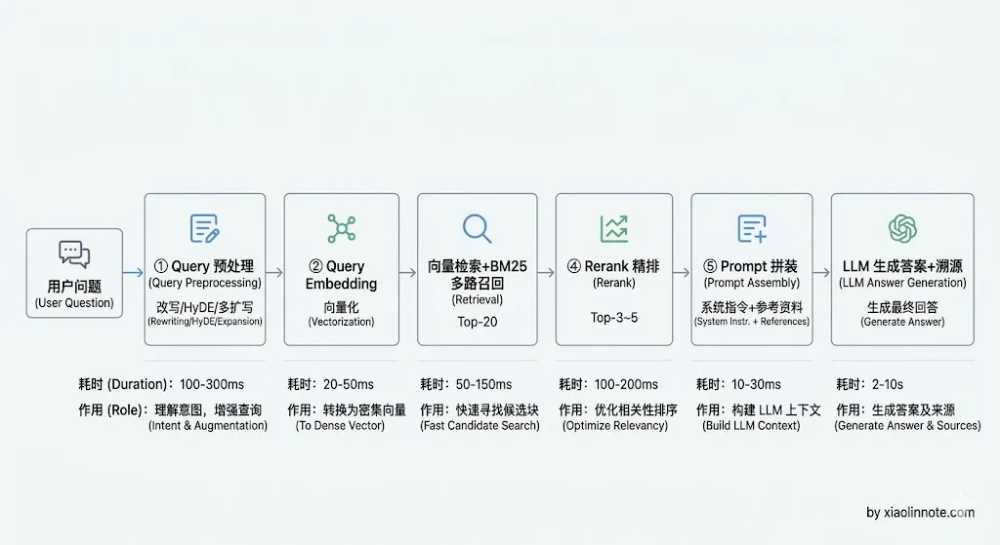
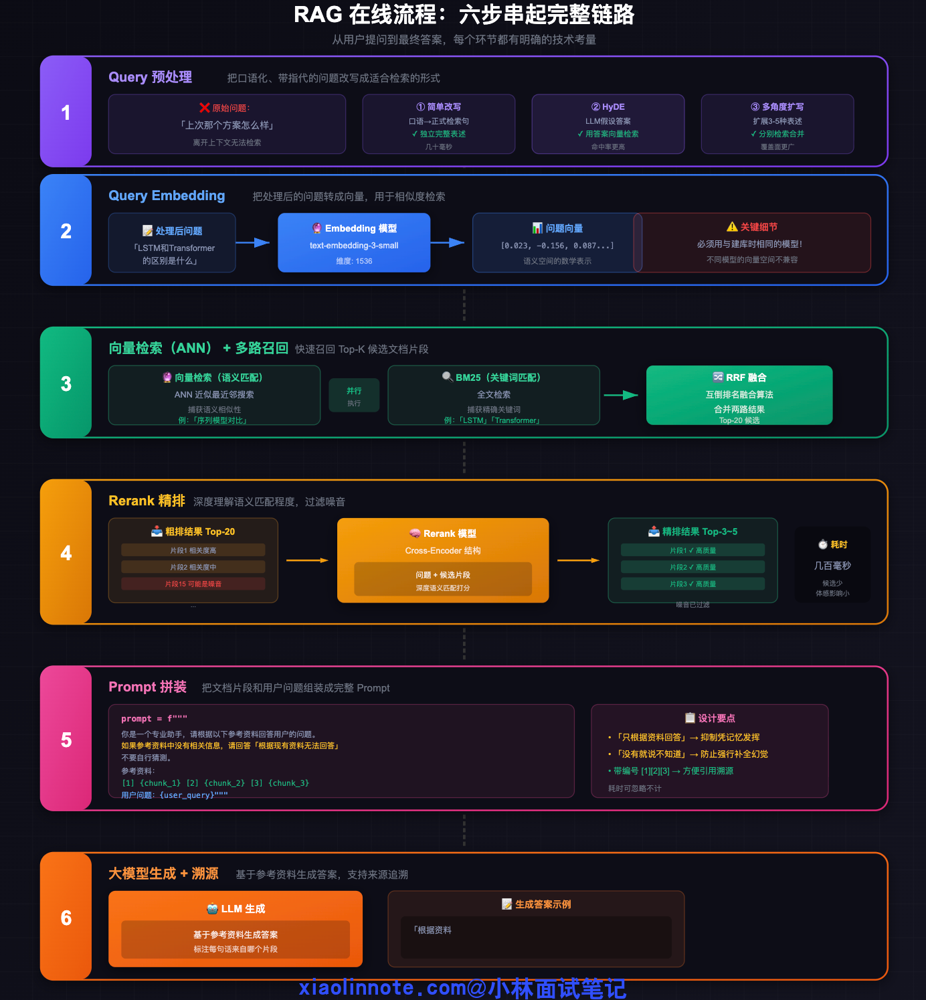
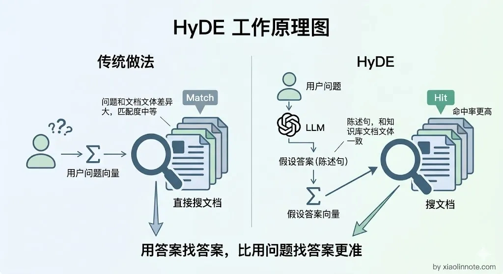
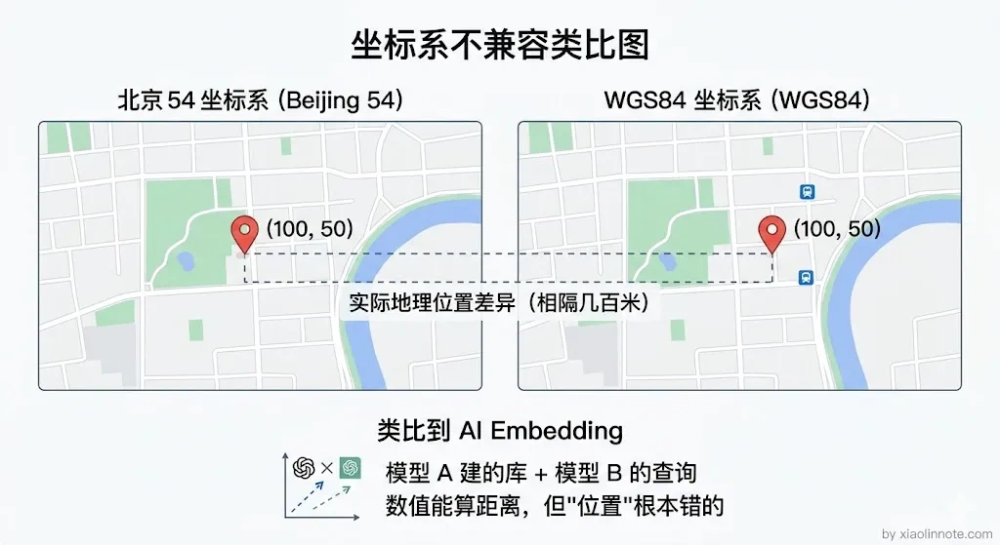
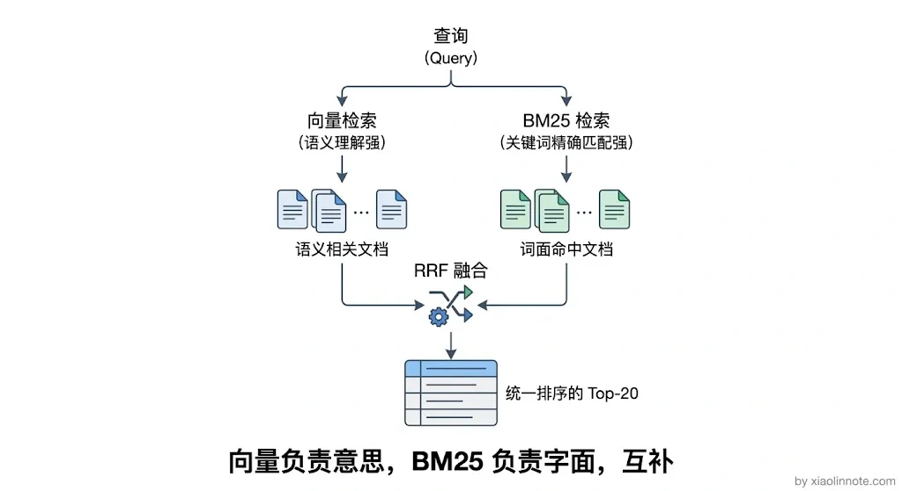
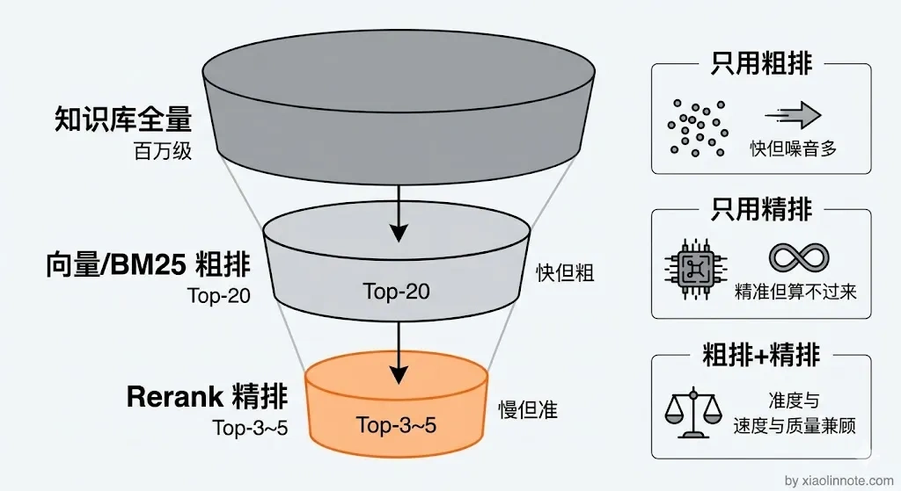
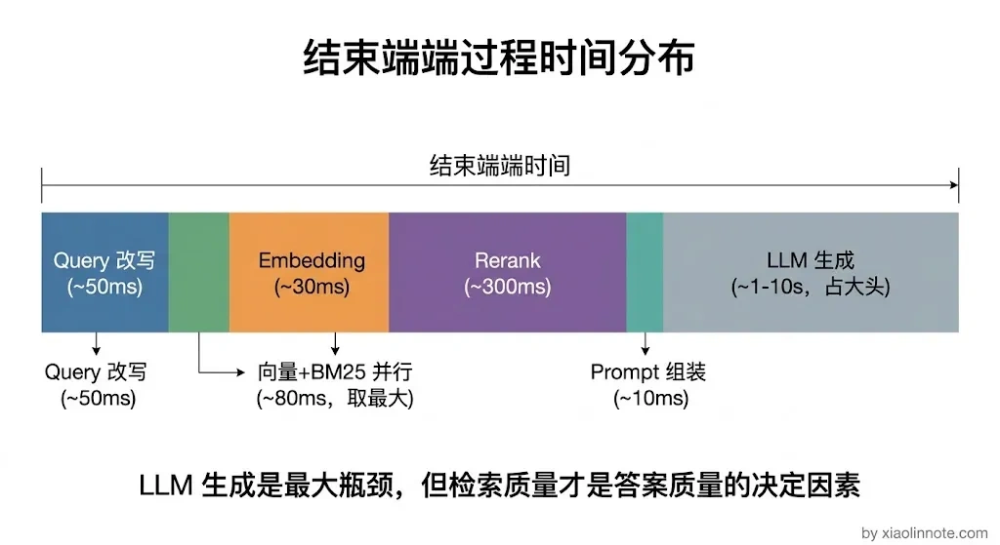

本篇目录
10. 你使用 RAG 给大模型一个输入，系统是怎样的工作流程？
👔面试官：当你给 RAG 系统输入一个问题，整个系统的工作流程是怎样的？从用户提问到最终拿到答案，中间经历了哪些步骤？
🙋♂️我：RAG 就是检索加生成嘛，用户提问之后去数据库里查一下相关文档，然后把文档丢给大模型让它回答，就两步，检索和生成。
👔面试官：就两步？用户的提问直接拿去检索？口语化的问题、带指代的问题你怎么处理？「上次说的那个方案」你让向量数据库怎么查？
🙋♂️我：呃，那就先让大模型改写一下问题呗，然后向量化去查，查到结果直接拼给大模型就行了，应该没什么别的了吧？
👔面试官：查到结果直接拼？Top-K 结果里混了一堆不相关的内容你不管？粗排和精排（Rerank）的区别是什么？多路召回做过吗？BM25 和向量检索怎么结合？Prompt 怎么拼才能抑制幻觉？你说「没什么别的了」，每一个环节你都答不上来。
🙋♂️我：好吧，我只知道大概流程，具体每一步的细节确实不太清楚……
👔面试官：RAG 在线流程是整个系统的核心链路，Query 预处理、向量检索、多路召回、Rerank 精排、Prompt 拼装、溯源生成，每一步都有工程细节和取舍。你只知道「检索 + 生成」四个字，中间的六七个环节一个都讲不出来，这怎么干活？回去把完整链路搞清楚再来吧。
好吧，面试官说的没错，我只记住了「检索 + 生成」这个大框架，中间的每一步细节都模模糊糊。下面我把 RAG 在线流程的每一步都掰开来讲清楚。
💡 简要回答
当你把一个问题输入给 RAG 系统，它不会直接丢给大模型，而是先经历一套「检索 -> 整理 -> 生成」的流水线。
具体来说：系统先对问题做预处理（改写成更适合检索的形式），然后把问题向量化，去向量库里找最相关的文档片段，再经过精排筛掉噪音，最后把筛选出来的片段和问题一起拼成 Prompt 交给大模型，大模型基于这些「参考资料」生成最终答案。
整个流程的核心目标只有一个：让大模型在回答时有真实的知识作为依据，而不是凭空发挥。
📝 详细解析
为什么不能直接把问题扔给大模型
先说为什么需要这套流程。
大模型的上下文窗口是有限的，不可能把整个知识库都塞进去；而且没有外部知识依据时，大模型只靠参数里的记忆回答，容易出现幻觉。所以 RAG 的在线流程本质是一个「精准取件」的过程：从海量知识里找到和这个问题最相关的那几段，然后再让大模型在这个「小范围」里作答。
你可能会想，为什么不把用户问题直接拿去向量库里搜，搜完就完了？因为在实际业务中，用户的提问往往是口语化的、带指代的、甚至有歧义的，直接拿去检索效果极差。所以整个在线流程按顺序分为以下几步，每一步都在为下一步准备更好的输入。


第一步：Query 预处理（Query Rewrite）
为什么要把 Query 预处理放在第一步？因为用户原始提问的质量决定了后续所有环节的天花板。如果输入就差，后面再怎么精排、再怎么拼 Prompt 都是白搭。
用户的提问往往是口语化的，甚至带着指代，比如「上次那个方案怎么样」，这种问题离开对话上下文完全没法检索。另外，就算问题表达清楚，用词和知识库里文档的用词可能完全不一样，直接拿去检索命中率会很低。
这一步通常让一个小模型对原始问题做改写。常见技术有几种。
一是简单改写，把口语化问题改写成更正式、独立完整的检索句。
二是 HyDE（Hypothetical Document Embeddings），让 LLM 先「假设」一个可能的答案，用这个假设答案的向量去检索。你可能会觉得奇怪，不用问题去搜反而用假设答案去搜？原因很简单：问题和答案的用词往往差异很大，但假设答案和真实答案的用词更接近，它们的语义空间天然更匹配，命中率往往更高。

三是多角度扩写，把同一个问题扩展成 3-5 种不同表述，分别检索后合并结果，覆盖面更广。
第二步：Query Embedding（问题向量化）
Query 改写好了，接下来要把它转换成向量才能去向量库里搜索。把处理后的问题用 Embedding 模型转成向量，这一步本身很简单，但有一个容易忽略的细节。
很多人以为随便选一个 Embedding 模型就行了，其实不然，必须用和离线建库时完全相同的 Embedding 模型。
为什么？因为不同 Embedding 模型在训练时见过的数据、目标函数、输出维度、向量空间的"形状"都不一样，模型 A 让「苹果手机」和「iPhone」的向量落在空间里的某个方向，模型 B 完全有可能让它们落在另一个方向，甚至连维度数都对不上（A 是 1024 维，B 是 1536 维，根本没法算距离）。用 A 模型建的库，如果用 B 模型来检索，两边的向量就像在不同坐标系里，距离计算完全没有意义，检索结果会一塌糊涂。
这就像你用经纬度定位，但一个系统用的是北京坐标系，另一个用的是 WGS84 坐标系，数值看起来差不多但实际位置差了十万八千里。这也是为什么一旦换 Embedding 模型，整个知识库必须重建——老向量和新查询不在同一套坐标系里，没法兼容。

第三步：向量检索（ANN 搜索）+ 多路召回
拿着问题向量，去向量数据库里做近似最近邻搜索（ANN），找出余弦相似度最高的 Top-K 个文档片段。这一步速度非常快，即使百万量级的向量库，通常几十毫秒就能返回结果。
但工程实践中，只用向量检索这一路往往不够。所以这一步通常同时进行多路召回：向量检索负责捕获语义相似性，BM25/全文检索负责捕获关键词精确匹配，两路各有所长。
很多人以为向量检索已经够用了，为什么还要 BM25？因为向量检索对精确词语（比如产品型号、专有名词、错误拼写）的识别能力比较弱，而 BM25 对这些精确匹配反而更在行。
比如用户问「LSTM 和 Transformer 的区别」，向量检索能找到「序列模型对比」相关的语义内容，BM25 能精准命中包含「LSTM」「Transformer」这两个词的文档。多路结果通过 RRF（互倒排名融合）算法合并，最终召回的结果比单路覆盖面更广、质量更高。

第四步：Rerank 精排
理解了第三步的粗排召回，你会发现一个自然的问题：Top-20 的结果里不可能条条都相关，肯定混了一些干扰项进去。Rerank 就是为了解决这个问题的。
向量检索是「粗排」，召回的 Top-K（比如 20 条）里可能混入相关度不高的干扰片段。Rerank 模型（Cross-Encoder 结构）会把用户问题和每个候选片段拼在一起输入，深度理解它们之间的语义匹配程度，重新打分排序。最终只保留 Top-3 到 Top-5 的高质量片段，把噪音过滤掉。
你可能会问，为什么不直接用 Rerank 模型来检索，还要先粗排再精排？因为 Rerank 是 Cross-Encoder 结构，需要把查询和每个候选拼在一起过模型，计算量比向量检索大得多。如果拿它对百万条数据逐一算分，延迟完全不可接受。所以工程上采用「粗排筛到几十条，精排再从几十条里挑最好的几条」这种两阶段策略，兼顾速度和质量。Rerank 整体耗时通常在几百毫秒以内，对用户体感影响不大，但检索质量的提升非常明显。

第五步：Prompt 拼装
精排后的高质量片段拿到了，接下来要把它们和用户的原始问题组装成 Prompt 交给大模型。典型模板大概是这样：
prompt = f"""
你是一个专业助手，请根据以下参考资料回答用户的问题。
如果参考资料中没有相关信息，请回答「根据现有资料无法回答」，不要自行猜测。
参考资料：
[1] {chunk_1}
[2] {chunk_2}
[3] {chunk_3}
用户问题：{user_query}
"""你可能会觉得这个 Prompt 挺简单的，没什么好讲的。但这里面每一条指令都有明确的工程意图。很多人以为只要把检索结果丢给大模型就行了，其实 Prompt 拼得不好，大模型一样会乱回答。
「只根据资料回答」是为了抑制大模型凭记忆发挥的倾向，大模型天生喜欢「帮忙」，你问什么它都想着要回答，哪怕资料里没有相关信息它也会自己编一个出来。
「资料没有就说不知道」是防止它在信息不足时强行补全出幻觉内容。参考资料带编号是为了方便后续做引用溯源，让用户知道每句话的依据是什么。
第六步：大模型生成 + 溯源
大模型拿到 Prompt 之后，基于参考资料生成答案。到这一步，整个 RAG 在线流程的核心工作就完成了。
工程实践中通常还会要求大模型在答案里标注每句话来自哪个片段（比如「根据资料[1]...」），这样用户可以追溯到原始文档，验证答案是否准确，可信度大幅提升。很多人以为 RAG 生成的答案就是最终答案，不需要再验证了，其实溯源这一步非常关键。大模型即使在有参考资料的情况下，依然可能过度发挥或者误读资料，溯源让用户有能力判断哪些内容是可靠的、哪些需要再确认。
整个链路串起来，在线阶段的耗时分布大概是：Query 改写几十毫秒，向量检索几十毫秒，Rerank 几百毫秒，Prompt 组装可忽略不计，大模型生成根据输出长度在 1-10 秒不等。工程上常见的优化手段是缓存高频 Query 的检索结果，以及把向量检索和 BM25 检索并行执行，把两路召回的延迟从串行叠加变成取最大值。

🎯 面试总结
回到开头那段面试，面试官问「RAG 在线流程是怎样的」，你不能只说「检索 + 生成」四个字就完事了。这就像别人问「一顿饭怎么做」，你回答「买菜和做饭」，中间的洗菜、切菜、调味、火候一个都没提。
正确回答要按顺序把六个步骤讲清楚。
第一步 Query 预处理（改写、HyDE、多角度扩写），把口语化的问题转成适合检索的形式；
第二步 Query Embedding，注意必须用和建库时相同的模型；
第三步向量检索 + 多路召回，向量检索和 BM25 各有所长，通过 RRF 融合结果。
第四步 Rerank 精排，用 Cross-Encoder 深度理解语义，把粗排的噪音过滤掉；
第五步 Prompt 拼装，明确约束 LLM 只根据资料回答、不知道就说不知道；
第六步生成 + 溯源，标注引用来源提升可信度。
每个环节干什么、为什么需要、有什么工程细节，都要能说清楚，这样面试官就知道你对 RAG 系统的理解不只是停留在「检索 + 生成」的表面。
对了，大模型面试题会在「公众号@小林面试笔记题」持续更新，林友们赶紧关注起来，别错过最新干货哦！